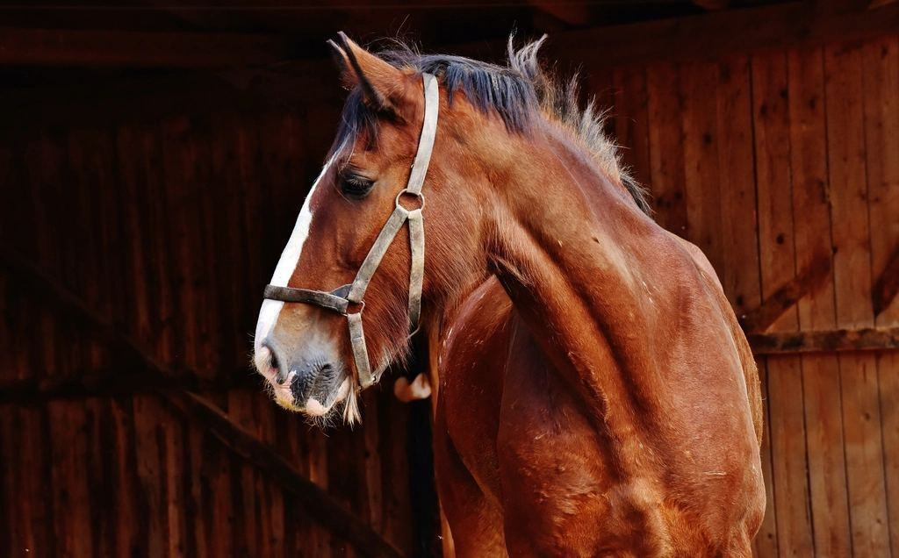

Referenser
Ett urval av uppdrag vi har utfört.
- 2025

Akut fång, halvblodsston
Sju graders rotation vid första besöket, två grader efter fyra månader med limskor.
- 2025

Hovbenssjukdom, hoppvalack
Ägghälsskor och rullad tå enligt plan från remitterande veterinär, åter i tävling efter fem månader.
- 2025

Stuteri Ängsö
Korrigerande verkning av elva föl med limmade förlängningar under första halvåret.
- 2024

Hovväggssprickor, travare
Kompositlagning och limmad sko tills hovväggen vuxit ned, utan uppehåll i träningen.
- 2024

Kurs för hovslagare
Tre dagar med dissektion och röntgen för åtta hovslagare från hela landet.
- 2026

Rörelseanalysprojekt
Systematisk mätning före och efter skoning på hundra hästar, sammanställs under 2026.
Veterinärer och hästägare om oss
Kristina L. · Västerås”Vi skickar alla svåra fånghästar till Ålund. Rapporterna med bilder gör att vi kan följa varje steg.”
Emma P. · Sala”Min häst hade tre graders rotation och ingen trodde att han skulle bli riden igen. I dag går han i skogen tre dagar i veckan.”
Jonatan R. · Eskilstuna”Kursen i röntgentolkning gav mig mer än fem år av egen erfarenhet. Jag ringer dem fortfarande om svåra fall.”